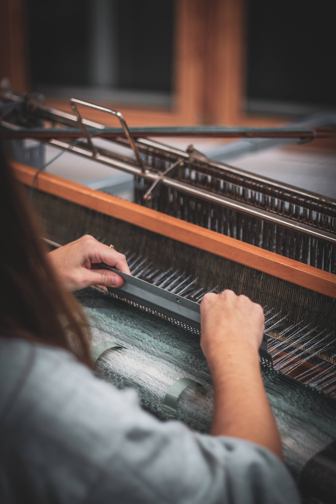
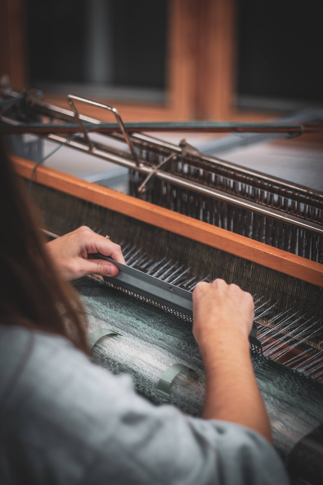

Soulignons vos intérieurs
Des matières pour apporter du relief à vos intérieurs


 

Myriade Studio est un atelier de conception textile. Manon Auguste y développe des tissages et broderies en volume. La lumière s’invite dans son travail pour illuminer délicatement vos intérieurs.
L’atelier se situe au Vaudreuil, en Normandie, face au Carré SaintCyr, il est ouvert sur rendez-vous.

Myriade Studio
Designer textile et lumière, Manon Auguste conçoit de nouvelles matières textiles. Après un BTS de stylisme, un DMA Arts Textiles - spécialité Broderie puis une Licence Professionnelle Mode et Hautes Technologies, elle déploie désormais le textile en volume pour l’architecture d’intérieur. Forte de ses expériences professionnelles en design textile, broderie, plumasserie, design papier, pour la haute-couture, les décors de vitrine ou encore les luminaires, elle place aujourd'hui ses savoir-faire textiles au cœur de projets d'exception. Ses textiles sont également déclinés en version lumineuse pour proposer une nouvelle manière d’illuminer nos intérieurs. Elle réalise des commandes sur-mesure.
Services proposés
Mon approche de la matière textile se décline sous la forme de plusieurs applications :
Travaillons ensemble !
Pièces murales
Je crée sur commande des oeuvres murales qui viennent revêtir vos intérieurs
Architecte d'intérieur
J’applique mes matières à l’échelle de projets architecturaux
Développement matière
À partir de vos matières, je conçois de nouveaux textiles en relief
Collection de matières
Des extraits de ma collection de matières en relief tissées main


Travaillons ensemble pour créer des matières inspirantes.
VISITEZ MES PAGES DE RÉSEAUX SOCIAUX POUR EN DÉCOUVRIR PLUS :
@myriadestudio
Gardons contact !
Adresse
Ateliers Saint-Cyr
28 rue Papavoine
27100 Le Vaudreuil
Téléphone
06 82 04 21 51
Rencontrons- nous prochainement !
Actualité
J’aurai le plaisir de présenter de nouvelles pièces uniques lumineuses sur le salon Révélations au Grand Palais !
Prenons rendez-vous !Adresse
Grand Palais 3 avenue du Général Eisenhower 75008 Paris
Métro Champs-Elysées - Clémenceau